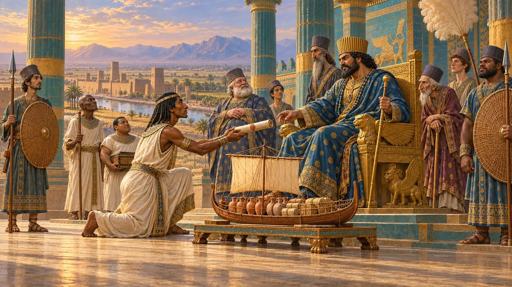
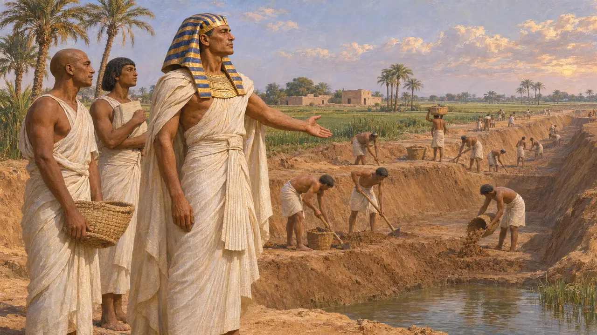
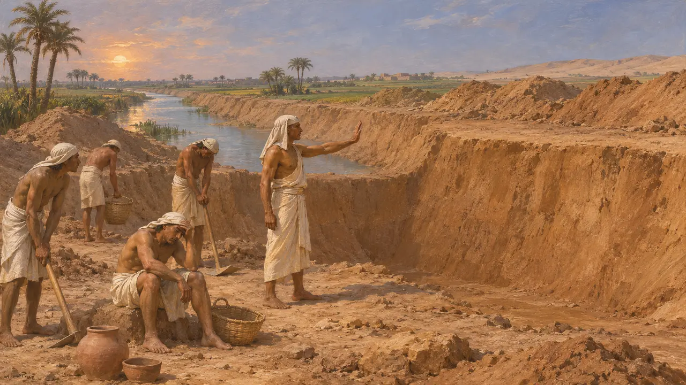
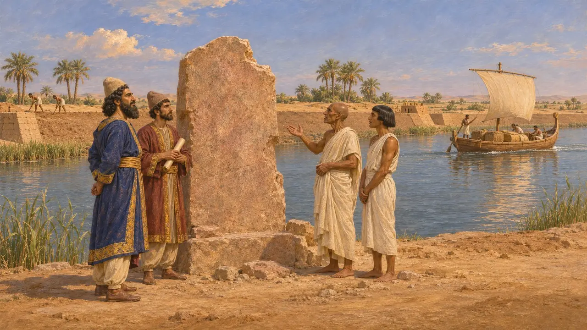
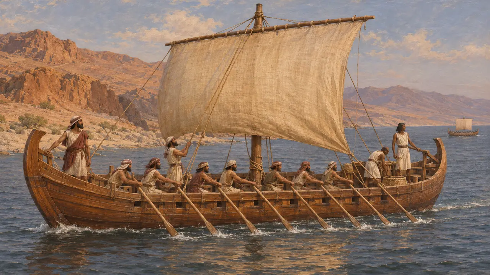
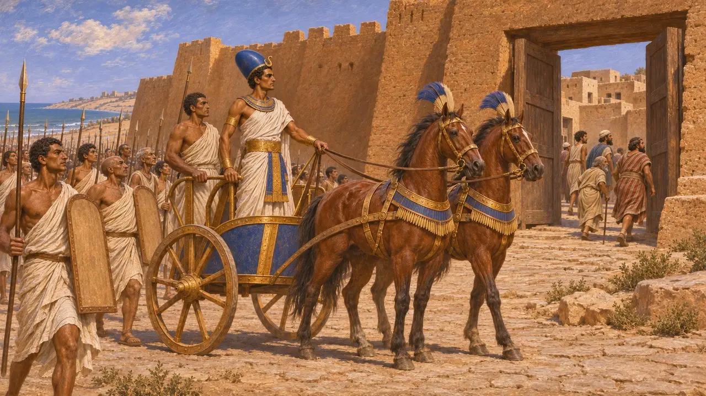

ネコ2世は第26王朝(サイス朝)の王で、プサムテク1世の子である。レヴァント方面に遠征し、ヘロドトスによれば、ナイル川から紅海へ向かう運河の掘削に着手した。のちにダレイオスがこの線上に運河を完成させており、運河の石碑はダレイオスの治世のものである。
ゲームでは： 本作でネコ2世の名が挙がるのは、年代記と、ナイル運河の出来事の記事における、運河の掘削を始めたファラオとしてのみである。人物も建物も固有のメカニクスもない。

エジプトのサイス朝の王
古代の記述ヘロドトスによれば、ネコスはプサムテクの子で、その跡を継いでエジプトを治めた。ヘロドトスはネコスの戦争と事業について語っているが、彼が書いたのはその治世よりずっと後のことであるため、その記述は後世のエジプトとギリシアの伝承に基づいている。
Herodotus 2.158

着工されながら未完に終わった運河
古代の記述ヘロドトスによれば、ネコスはナイル川から東の紅海へ向けて運河を掘り始め、その工事でおびただしい数のエジプト人が命を落としたという。さらに、神託が「お前は異邦人のために働いているのだ」とネコスに警告したため、王は工事をやめたと付け加えている。のちにヘロドトスは、これを完成させたのはダレイオスだと述べている。
Herodotus 2.158

ダレイオスが事業を完遂する
同時代の記録エジプトで運河の跡に沿って見つかったダレイオスの断片的な石碑は、この事業を彼の功績として記録している。ネコの名は挙げられていないため、それ以前の掘削はヘロドトスに拠っている。本作のナイル運河の項では、運河の完成をダレイオスの事績としている。
P. Briant, From Cyrus to Alexander, 2002

艦船とアフリカ周航
係争中ヘロドトスによれば、ネコスは地中海沿岸と紅海沿岸の両方で三段櫂船を建造した。また、ネコスがフェニキア人を送り出してアフリカを周航させ、彼らは3年目に帰還したとも述べている。太陽が右手にあったという細部は検証しようがないため、この航海が実際にあったのかどうかについて、現代の歴史家の意見は分かれている。
Herodotus 2.159

レヴァントでの戦争
古代の記述ヘロドトスによれば、ネコスはマグドロスでシリア人を破り、カデュティスの都市を奪った。この都市はガザにあたるとする説もある。ヘブライ語聖書は、ネコスがメギドでユダの王ヨシヤを殺したと伝えている。ネコスはのちにカルケミシュでバビロニア人に敗れたが、これはバビロニア年代記に記録されている。
Herodotus 2.159
出典
- Herodotus 2.158
- Herodotus 2.159
- Herodotus 4.42
- P. Briant, From Cyrus to Alexander, 2002